年月日14:55:43
来源：39健康网-皮肤病专科
“朱医生，我真是后悔没有早点让你治疗，白花了这么多钱，身体也差点废了，是您救了我！”一位被顽疾折磨了近20年的大姐说。
“朱阿姨，我喜欢这样叫您，您在治疗时对我关怀备至，好像自己的孩子一样……”一位23岁的小伙说。
“朱大夫，真不知道该怎么感谢您了，您让我的女儿不再嫌弃我。”一位40多岁的大叔说。
“朱老师，我也开始对中医感兴趣了，我在您身上看到了医生美好的医德！”一位即将高考的学生说。
“朱老师，治好了后还可以找你咨询吧，你不要嫌我烦。”一位恢复效果非常好的患者说到。
“我们全家都替我感到高兴，说我很幸运，遇到了一个好医生。”一位治疗康复的新手妈妈说。
“朱大夫，您每天为这么多患者看病，也一定要注意身体呀！”一位60多岁的大娘说到。
……
这位被众多患者如此称赞的医生就是朱金萍，在我国皮肤病领域绝对是不可多得的殿堂级人物。
绝境多得朱医师
祛癣不在是梦痴
一喷一抹一吃，内外同治，脱掉蛤蟆皮
冯女士：我今年27岁，贵阳人，在纺织厂上班，患【牛皮癣】6年多，前胸后背都有，皮肤干燥、脱屑、瘙痒，用过5年西药，一停药就复发，一次比一次狠，27岁还没婆家。使用朱金萍老师的方子两个周期，鳞屑全掉光，皮肤完好如初，无疤无印，白里透红，至今未复发，交了男友，准备年内完婚。
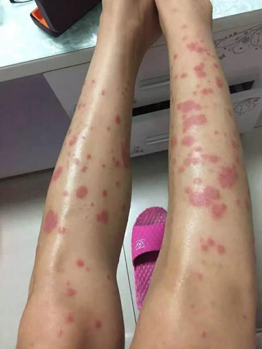 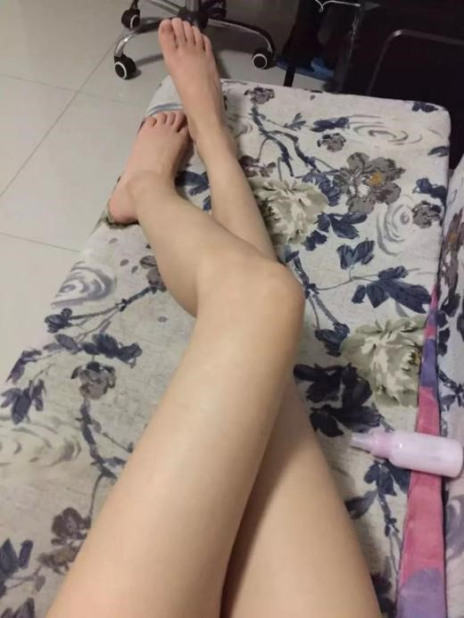
金先生：我今年46岁，天津人，在外企做财务经理，患【慢性湿疹】10年，经多家医院治疗未果，经常四肢霉烂，奇痒。使用朱金萍老师的方子，瘙痒立即消失，两个周期，患处如常，无疤无痕。
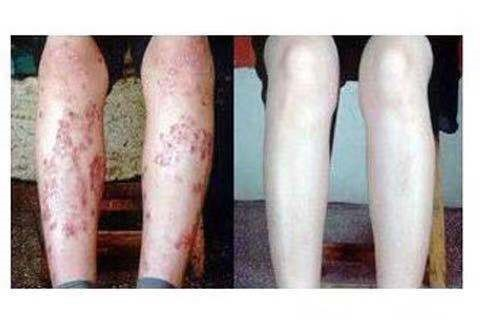付先生：今年48岁，患皮炎有七八年了，整个背部几乎看不到好的皮肤，奇痒难耐，白天工作就没法安心的待在座位上，被领导批评了多次，更难受的是到了晚上，折磨的付先生难以入眠，翻来覆去，有时候拿头在床上撞，长此以往，陷入恶性循环，身心受到多重伤害；经纯中药的清癣御肤疗法治疗后：
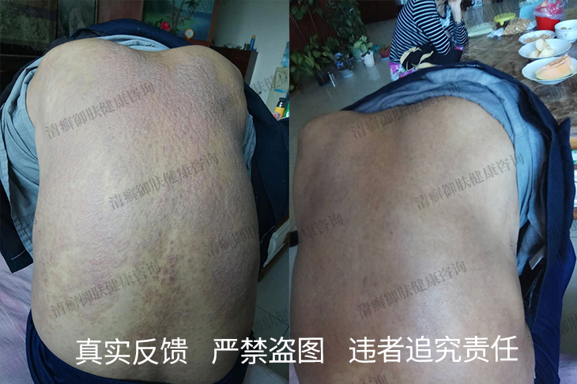喻先生：我今天45岁，是一位民办教师，得了6年多的【苔藓性淀粉样变】，小腿，手臂，有灰色和黄褐色小丘疹，皮损肥厚扁平如苔藓，久治不愈，剧痒难忍。用朱金萍老师的方子1个周期就控制住了病情，5个周期皮损就完全消失，看不到什么疤痕
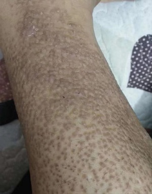 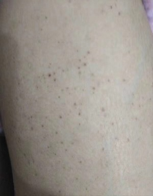
让全世界认识中国医学的神奇——治癣奇人朱金萍
朱金萍，女，本科学历，毕业于黑龙江佳木斯中医学院。陕西中医疑难皮肤病诊疗组领衔人。从事皮肤病治疗三十余年的老中医，对体股癣、手足藓及各类免疫性皮肤病的诊治有丰富的经验。自我总结出治疗牛皮癣病人的系列疗法，治好了数万例各型牛皮癣病人。先后于西安医学院全国皮肤科师资班进行皮肤病学习、临床、科研工作；传承掌握了百余种皮肤病治疗的名方、老方、验方，在牛皮癣及各类疑难皮肤问题的治疗上有着独到办法。
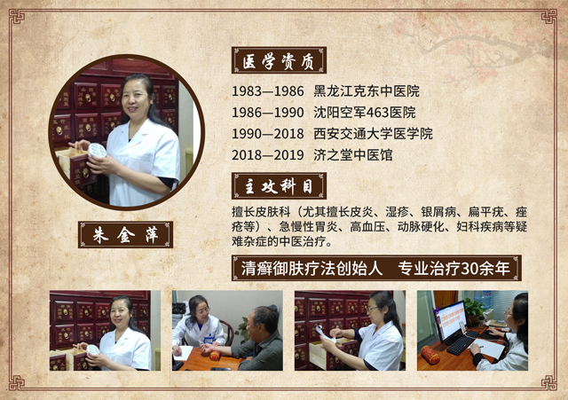长按识别下方↓↓↓二维码添加朱中医微信号，可在线问诊！
也可加微信： 在线免费咨询
他认药极准，如同火药金晴，一眼便能察出药材真假。选用的药材必定是“品种最纯正”、“生长环境最纯净”、“制作工序最纯真”、“药性保持最纯良”的“四纯良药”。
他推荐的药方必定是精品，上品，极品，绝品，具有四品特性，必定具有铲毒拔根、立竿见影、手到病除三大顶级功能，而且，他将这三种功能视为基本要素。否则，宁可弃之不用，也不滥竽充数。
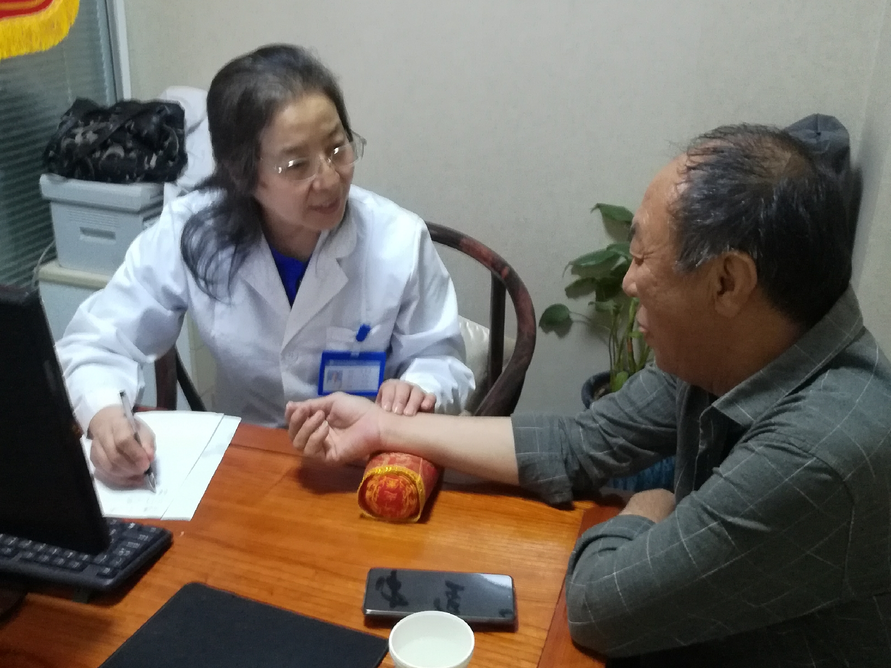↑↑↑这张图是朱金萍亲自细心的给患者把脉治疗
朱医治癣，代代秘传！
一人一方，见招拆招！
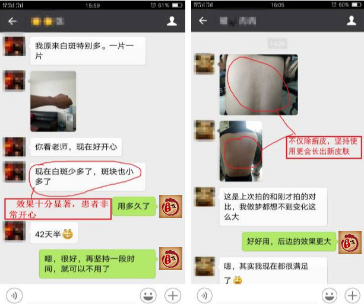
“给患者用劣质药，无异于谋财害命。”
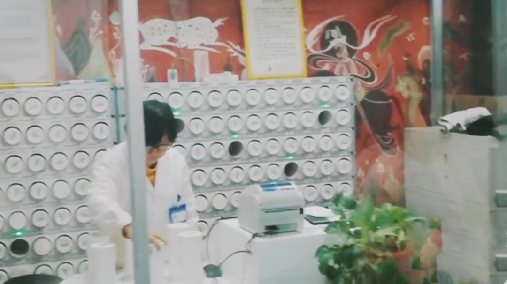三珍清选用的中药配方颗粒采用的是高科技浓缩、提取，遵循传统中药理论基础，每味中药随证加减，保证临床处方不受任何影响，同时具有不需要煎煮、直接冲服、服用量少、作用迅速、成份完全、疗效确切、安全卫生、携带保存方便等许多优点。所有药材均为“道地药材，尊古炮制”，绝无添加，真正的遵循“炮制虽繁必不敢省人工，品味虽贵必不敢减物力”的制药原则。
抹一抹癣毒全消
治癣不留痕，治疮不留疤！
开皮洗癣，分癣分治
一抹，断根换肤
3天止痒，7天脱屑，60天断根
☆ 瘙痒、流水、红肿、溃烂等问题。
☆ 牛皮癣、湿疹、荨麻疹、鱼鳞病、疱疹、痤疮等；
☆ 接触性皮炎、脂溢性皮炎、疱疹性皮炎、神经性皮炎；
☆ 体癣、股癣、花斑癣、头癣、手癣、足癣、甲癣等顽固性皮癣；
一副药扒癣皮，老皮换新皮，你说奇不奇？
只需一副药，根据患者病情，因病施治，顽固癣毒一招清除，患者皮肤治愈后，光亮如新，就像换了一层新皮。
这种神奇的除癣奇方，就是“清癣御肤疗法”!
★有牛皮癣、湿疹、顽固性皮炎、手足癣等皮肤病的朋友，赶快加微信，说出自己的情况，朱金萍团队就会给你帮助，让癣症消失，让你全面得到恢复。
治疗湿疹、皮炎、牛皮癣
快！准！狠！
★使用当天：短短3秒，哇！感觉凉飕飕，特别清爽舒服，当时就不痒了，刺痒刺痛的感觉没有了，皮屑明显开始变软、舒服！
★使用3天：癣皮开始脱落，病灶处痒痛消失，丘疹开始消退，简直不敢相信自己眼睛，厉害！
★使用14天：病变部位颜色变浅，皮损斑块变小变薄，溃烂部位开始结痂，惊喜！
★使用30天：老牛皮软化，癣屑脱了一层又一层，健康的皮肤长出来了，神奇！
★使用60天：皮肤光滑如新，免疫增强，让皮癣全面得到恢复，幸福！
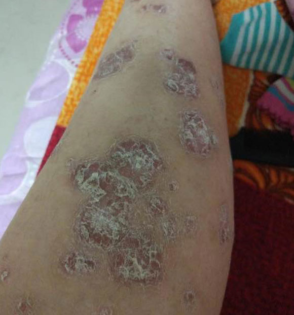 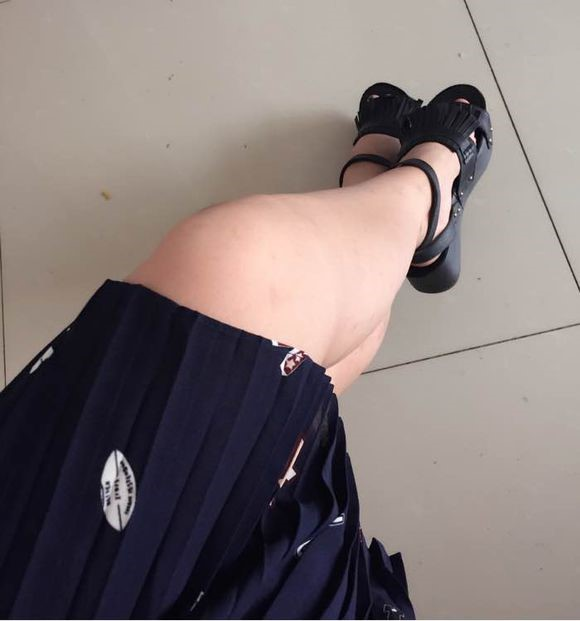
祛除顽癣——改变你的人生！
你还因为顽癣，求职失败！相亲失败！婚姻破裂？？
你是不是吃了很多药，花了很多钱，仍然顽癣缠身，久治难愈？
机会就在眼前，奇迹已经发生！皮癣容易扎根，拖下去小问题会变成大问题，早治早好才是上策！
长按识别下方↓↓↓二维码添加朱中医微信号，可在线问诊！
也可加微信： 在线免费咨询
★★★有牛皮癣、湿疹、顽固性皮炎、手足癣等皮肤病的朋友，加朱老师微信，说出自己的情况，让癣症消失★★★
--
我有发言权！我十多年的银屑病，全身被蚕豆大的灰白色鳞屑覆盖，状如松树皮，浑身奇痒无比，一抓就见血。上个月抱着试一试的心态加了朱中医微信，结果当天瘙痒明显减轻，半个月皮损鳞屑减少，皮疹消退，现在虽然没有完全康复，但再坚持两三月肯定能好！
喜欢回复
--
哈哈，比我想象恢复的速度还快！
喜欢回复
--
刚开始是头上有屑，没注意，结果扩散严重了，看了3年，反复复发，没有好，期间抹药抹的皮肤都起水泡了，而且蛋蛋上面摸一点就起水泡了，走路什么的都不好办，那种感觉你们可懂？前阵子上网，无意加了加了朱中医调理了3个疗程，效果真的很好，至今身上没有留下任何印记。
喜欢回复
--
哈哈，我也是老师的忠实粉丝，现在老师一直在指导我用药，还有平时叮嘱我不要染发烫发，不能吃辣的，甜的，油的，比如奶油之内的最好不要吃，每天运动，不知道为什么，真的就好了很多很多了，现在胳膊、大腿、脚腕上的癣斑都没有了，不过平常还是要注意。
喜欢回复
--
记得平时也要养成良好的生活习惯，才能杜绝后患。
喜欢回复
--
他是怎么给你们调理的？我老公也有这方面的问题，荨麻疹年轻时候就有了，试了好多办法都不顶用，你们说的这个名医真能治好皮肤病吗？
喜欢回复
--
我是脂溢性皮炎，看了之后默默的加了朱中医的微信，真不容易，开心！希望也能早点康复，看到朋友圈里每天都有好多人调理好了，我都有点迫不及待了
喜欢回复
--
去年开始，我上臂、大腿长硬疹子，活像鸡皮疙瘩，一到夏天更痛苦，捂着跟怪物一样，去了少说也有七八家大医院了，没一点好转，没有一点改善，跳楼的心都有。

喜欢回复
--
想开点，千万别耽搁了，及时就医。
喜欢回复
--
朱中医我接触过，他治皮肤病是一绝！本人7年鱼鳞病，身上有大片棕黑色鳞屑，由于面积大，连换皮手术都不能做，找朱中医调理了小半年了，现在长出了新皮，谁要不信，给你发照片！对了，老师微信号就是这个： ，不过好像他比较忙，每天亲自开方配方，我有时跟他聊，回复都很慢，大家加上耐心等待就行，老师人很好，看到一定会回的。
喜欢回复
--
楼主，你说的这是朱中医吧？医学的的代表呀！50多年的临床经验，没有他看不好的皮肤病，能不厉害吗？能找他给你看可算你走运了，我们这的人想找他看还看不上呢
喜欢回复
--
楼主握个手！我也是在微信上加了朱中医！接近10年的荨麻疹啊，调理了半个月，现在一次也没犯过！之前犯起来的时候全身都是红斑，痒的我满地打滚，很不能把皮给撕了，我家里人都吓坏了，呵呵，希望也能像你一样彻底断根吧！
喜欢回复
--
我被牛皮癣折磨了差不多9年了，一直寻医问药，就是治不好。后来我表哥推荐我加了朱中医微信号，现在已经基本上全好了。
喜欢回复
--
不是吧，楼主找的也是朱中医？没想到他的知名度这么大了，呵呵。之前我男朋友也是严重的皮癣，痒起来就看他不停的抓，经常抓的血肉模糊，想跟他亲热一下都提心吊胆的怕传染，后来也是通过朱中医的微信指导，才慢慢好转，鳞屑全掉光，跟他在一起再也不担心了。
喜欢回复
 孙建友
孙建友--
李祥贺：楼主，朱中医的微信号是 ，水平很高的名医，没想到开微信了，好新潮啊，这联系起来就方便多了！
喜欢回复
长按识别下方↓↓↓二维码添加朱中医微信号，可在线问诊！
--
我顽固性皮肤瘙痒快14年了，去过至少10家医院都没用，朱中医的方子我刚用上，用药三天就不痒了，听楼主这么说我更有信心了！老师人挺好的，虽然回复慢了点（毕竟问他的人多，可以理解），但每一个问题都会帮我仔细分析，一点架子都没有，很感动！
喜欢回复
--
他是怎么给你们调理的？我老公也有这方面的问题，荨麻疹年轻时候就有了，试了好多办法都不顶用，你们说的这个名医真能治好皮肤病吗？
喜欢回复
--
楼上的，是真是假你自己加一下不就知道了，我刚加了他，看他朋友圈有好多关于皮肤病的知识。
喜欢回复
 奥林斯
奥林斯--
我接受过朱中医的调理指导，比较有资格说这个话题，他的方子效果没得说（我之前寻常型的银屑病有七八年，现在已经完全好了），但是一定要注意一点，那就是必须按他的指导来！调理期间不能随心所欲，这样才能调出好结果。如果做不到就不要去加，免得浪费他的时间和精力！
喜欢回复